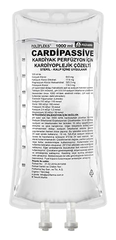

Cardipassive Kardiyak Perfüzyon İçin Kardiyoplejik Çözelti, 1000 ml

Ne için kullanılır
KT · Bölüm 1- CARDİPASSİVE plastik muhafazada PP torba içerisinde kullanıma sunulmaktadır. - Her torbada 1000 mL çözeltisi içerisinde etkin madde olarak 6430 mg sodyum klorür, 176 mg kalsiyum klorür dihidrat, 3253 mg magnezyum klorür heksahidrat olarak ve 1193 mg potasyum klorür içerir. - CARDİPASSİVE, vücut ısısı düşürülerek (hipotermi) ve kalbin kan dolaşımını azaltılarak (cerrahi iskemi) yapılan açık kalp ameliyatları sırasında kalbi durdurmak için kullanılmaktadır.